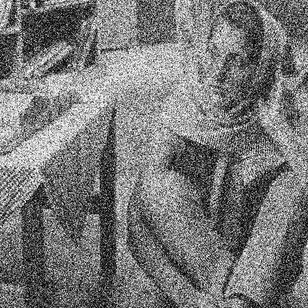
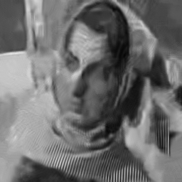

Denoising with Linearizing Belief Nets



LBN (K=1) 
LBN (K=10)

BM3D
Wait for the 2 large gifs to load.
The demo compares the denoising results for the state-of-the-art BM3D model and the LBNs. The LBN generates more realistic images than BM3D while properly modelling the uncertainty associated with denoising. We can also see that increasing the number of Monte Carlo samples K improves the variety of the distribution modelled.